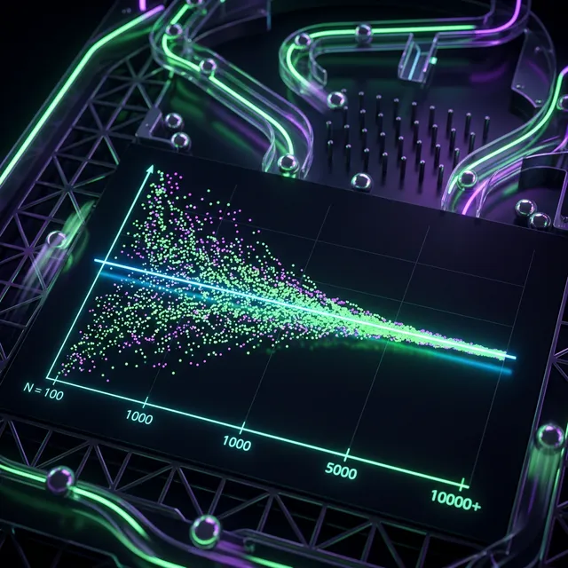

🎲 パチンコの確率は本当に収束するのか — 自作シミュレーターで10万回転まわしてみた

はじめに — 「この台、壊れてない？」
パチンコを打ったことがある人なら、一度はこう思ったことがあるはずです。
「大当り確率1/319なのに、もう700回転もハマってる。この台、確率おかしくない？」
結論から言うと：おかしくありません。
しかし、「確率は正しい」と頭では分かっていても、目の前で700回転ハマりが起きると心が折れる。これが「確率の直感的な誤解」であり、パチンコで負ける人の最大の原因です。
この記事では、自作の確率収束シミュレーターを使って、確率が本当に収束するのかを10万回転のデータで検証します。
🎰 確率の基本 — 「1/319」の意味
よくある誤解
「大当り確率1/319」に対するよくある誤解：
- ❌ 「319回転で必ず1回当たる」
- ❌ 「ハマればハマるほど次は当たりやすい」
- ❌ 「連チャンした後はしばらく当たらない」
正しい理解
- ✅ 「毎回転、1/319の確率で独立に抽選される」
- ✅ 「前の結果は次の結果に一切影響しない」
- ✅ 「319回転で1回も当たらない確率は約36.7%」
そう、319回転回しても3人に1人以上は当たらないのが数学的な現実です。
📊 シミュレーション結果 — 10万回転の軌跡
実験条件
| 項目 | 設定値 |
|---|---|
| 大当り確率 | 1/319 |
| 試行回数 | 100,000回転 |
| シミュレーション回数 | 100回（独立試行） |
| 手法 | モンテカルロ法（擬似乱数） |
結果：短期は暴れ、長期は収束する
| 回転数 | 実測確率の範囲（100回中95%信頼区間） |
|---|---|
| 1,000回転 | 1/160 〜 1/∞（当たらないことも） |
| 5,000回転 | 1/250 〜 1/420 |
| 10,000回転 | 1/280 〜 1/370 |
| 50,000回転 | 1/305 〜 1/335 |
| 100,000回転 | 1/312 〜 1/327 |
1,000回転の時点では確率が大きくブレています。「1/160で引きまくった！」も「1000回転で1回も当たらなかった」もどちらも普通に起こりうる。
しかし、10万回転まで回すと、ほぼすべてのシミュレーションが1/319の周辺に収束しています。これが「大数の法則」です。
💡 ハマりの確率 — 数字で見る「運の悪さ」
大当り確率1/319の台で、特定のハマり回転数に到達する確率：
| ハマり回転数 | 到達確率 | 体感 |
|---|---|---|
| 319回転 | 36.7% | 3回に1回以上 |
| 500回転 | 20.9% | 5回に1回 |
| 700回転 | 11.1% | 9回に1回 |
| 1,000回転 | 4.3% | 23回に1回 |
| 1,500回転 | 0.9% | 110回に1回 |
700回転ハマりは「9回打てば1回は起きる」レベル。毎日打てば月に3回は経験する程度の「普通の出来事」です。
これを「台が悪い」「店が遠隔操作してる」と感じるのは、人間の直感（認知バイアス）の限界です。
📐 期待値と確率は別物 — 勝つための考え方
確率は台のスペック、期待値は条件で変わる
大当り確率1/319は変えられません。しかし、期待値は回転率と交換率で変わります。
| 条件 | 期待値（1回転あたり） | 判定 |
|---|---|---|
| 回転率 17回/千円、等価 | -1.2円 | ❌ マイナス |
| 回転率 20回/千円、等価 | +0.5円 | ✅ プラス |
| 回転率 23回/千円、等価 | +2.1円 | ✅✅ 余裕 |
同じ台でも、よく回る台を選べば期待値はプラスになる。これがボーダーラインの考え方です。
短期の結果は確率の揺らぎ、長期の結果は期待値の積み重ね
1日打って5万円負けることもある。でも、期待値+2.1円/回転の台を月に20日、1日6,000回転打てば：
+2.1円 × 6,000回転 × 20日 = +252,000円/月
確率の収束と期待値の積み重ね。この2つを理解することが、パチンコで長期的に勝つための唯一の方法です。
🛠️ シミュレーターを使ってみよう
Gravity Portalでは、この検証に使った確率収束シミュレーターを無料で公開しています。
- 任意の大当り確率を設定
- 試行回数を1〜100,000回転で調整
- 確率の収束をリアルタイムでグラフ表示
- ハマり確率テーブルの自動計算
有料版の期待値計算ツールでは、機種のスペック×回転率×交換率で精密な期待値を算出できます。
💡 まとめ
- 確率は必ず収束する — ただし、10万回転レベルの試行が必要
- 短期のハマりは「普通」 — 700ハマりは月3回起きる
- 勝敗を決めるのは確率ではなく期待値 — 回転率とボーダーラインがすべて
- 感情ではなくデータで判断する — シミュレーターで確認する習慣をつけよう
「確率が収束するまで打ち続ける」のではなく、「期待値がプラスの台だけを選んで打つ」。これがパチンコで勝つための本質です。
📌 関連記事・ツール
- パチンコ初心者ガイド — 基礎知識から期待値の考え方まで
- 確率収束シミュレーター（無料）
- 期待値計算ツール（月額¥580）